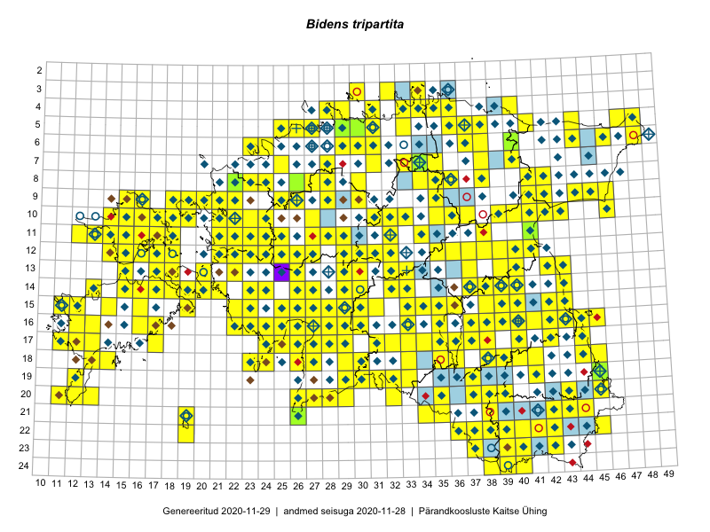

Bidens tripartita
Uuendatud: 2016-12-08
Kaardile koondatud taksonid: Bidens tripartita L.

Kaart põhineb 254 kirjel, neist vaatlusi 253 ja eksemplare 1. Taksonit on leitud 205 ruudust.
| Ruut | Vaatleja(d) | Vaatlusaeg | Kirje tüüp | Viide andmebaasikirjele |
|---|---|---|---|---|
| 13-15 | Toomas Kukk, Eerik Leibak | 2015-08-09 | ruut/ala | vaata PlutoFis |
| 16-40 | Thea Kull | 2015-07-07 | ruut/ala | vaata PlutoFis |
| 06-40 | Toomas Kukk, Peedu Saar | 2014-09-24 | ruut/ala | vaata PlutoFis |
| 03-32 | Rein Kalamees, Kersti Püssa | 2015-09-06 | ruut/ala | vaata PlutoFis |
| 18-45 | Peedu Saar | 2015-07-04 | ruut/ala | vaata PlutoFis |
| 18-44 | Peedu Saar | 2015-07-04 | ruut/ala | vaata PlutoFis |
| 13-20 | Peedu Saar, Elle Roosaluste | 2015-07-12 | ruut/ala | vaata PlutoFis |
| 15-38 | Peedu Saar | 2015-07-14 | ruut/ala | vaata PlutoFis |
| 15-39 | Peedu Saar | 2015-07-15 | ruut/ala | vaata PlutoFis |
| 10-35 | Peedu Saar, Ott Luuk | 2015-07-27 | ruut/ala | vaata PlutoFis |
| 15-42 | Peedu Saar, Eerik Leibak | 2015-07-30 | ruut/ala | vaata PlutoFis |
| 16-41 | Peedu Saar, Eerik Leibak | 2015-07-30 | ruut/ala | vaata PlutoFis |
| 18-45 | Toomas Kukk, Kersti Tambets, Sten Mander, Janika Sammasto, Timo Luhamäe | 2014-07-29 | ruut/ala | vaata PlutoFis |
| 09-15 | Toomas Kukk, Eerik Leibak | 2015-08-11 | ruut/ala | vaata PlutoFis |
| 16-45 | Toomas Kukk, Eerik Leibak | 2015-07-29 | ruut/ala | vaata PlutoFis |
| 06-44 | Peedu Saar, Liina Oja | 2015-07-21 | ruut/ala | vaata PlutoFis |
| 18-40 | Malle Leht | 2015-07-25 | ruut/ala | vaata PlutoFis |
| 16-44 | Toomas Kukk, Eerik Leibak | 2015-07-29 | ruut/ala | vaata PlutoFis |
| ? | Malle Leht | 2015-07-28 | ruut/ala | vaata PlutoFis |
| 09-45 | Peedu Saar, Liina Oja | 2015-07-24 | ruut/ala | vaata PlutoFis |
| 13-40 | Peedu Saar | 2015-08-10 | ruut/ala | vaata PlutoFis |
| 23-42 | Peedu Saar, Ott Luuk | 2015-08-12 | ruut/ala | vaata PlutoFis |
| 12-40 | Peedu Saar, Eerik Leibak | 2015-08-16 | ruut/ala | vaata PlutoFis |
| 05-47 | Tiit Hallikma, Toomas Kukk | 2015-07-22 | ruut/ala | vaata PlutoFis |
| 12-21 | Tiit Hallikma, Toomas Kukk | 2015-08-27 | ruut/ala | vaata PlutoFis |
| 12-24 | Tiit Hallikma, Toomas Kukk | 2015-08-24 | ruut/ala | vaata PlutoFis |
| 11-41 | Peedu Saar | 2015-08-22 | ruut/ala | vaata PlutoFis |
| 09-44 | Ott Luuk, Hannes Pehlak | 2015-07-24 | ruut/ala | vaata PlutoFis |
| 16-38 | Peedu Saar, Ott Luuk | 2015-09-02 | ruut/ala | vaata PlutoFis |
| 17-38 | Peedu Saar, Ott Luuk | 2015-09-02 | ruut/ala | vaata PlutoFis |
| 06-48 | Ott Luuk, Hannes Pehlak | 2015-07-21 | ruut/ala | vaata PlutoFis |
| 14-32 | Katrit Karus, Tõnu Feldmann | 2015-08-03 | ruut/ala | vaata PlutoFis |
| 05-31 | Katrit Karus, Tõnu Feldmann | 2015-08-04 | ruut/ala | vaata PlutoFis |
| 10-22 | Toomas Kukk, Thea Kull | 2014-08-21 | ruut/ala | vaata PlutoFis |
| 10-23 | Toomas Kukk, Thea Kull | 2014-08-22 | ruut/ala | vaata PlutoFis |
| 16-25 | Indrek Tammekänd | 2015-09-18 | ruut/ala | vaata PlutoFis |
| 07-34 | Jana-Maria Habicht, Ester Valdvee | 2015-07-20 | ruut/ala | vaata PlutoFis |
| 18-45 | Toomas Kukk, Kersti Tambets, Janika Sammasto, Timo Luhamäe, Sten Mander | 2014-07-29 | punkt | vaata PlutoFis |
| 08-34 | Jana-Maria Habicht, Ester Valdvee | 2015-07-31 | ruut/ala | vaata PlutoFis |
| 09-35 | Jana-Maria Habicht, Ester Valdvee, Kirke Pilvik, Anu Nurk | 2015-07-30 | ruut/ala | vaata PlutoFis |
| 16-43 | Thea Kull, Meeli Mesipuu | 2015-08-12 | ruut/ala | vaata PlutoFis |
| 15-40 | Thea Kull | 2015-06-15 | ruut/ala | vaata PlutoFis |
| 14-38 | Thea Kull | 2015-08-07 | ruut/ala | vaata PlutoFis |
| 16-42 | Thea Kull, Eerik Leibak | 2015-07-05 | ruut/ala | vaata PlutoFis |
| 16-26 | Meeli Mesipuu | 2015-07-18 | ruut/ala | vaata PlutoFis |
| 09-21 | Ott Luuk, Peedu Saar | 2015-08-26 | ruut/ala | vaata PlutoFis |
| 12-22 | Ott Luuk, Peedu Saar | 2015-08-24 | ruut/ala | vaata PlutoFis |
| 14-32 | Maria Abakumova, Helle Mäemets | 2015-07-01 | ruut/ala | vaata PlutoFis |
| 15-34 | Maria Abakumova, Helle Mäemets | 2015-07-30 | ruut/ala | vaata PlutoFis |
| 10-32 | Ott Luuk | 2015-08-03 | ruut/ala | vaata PlutoFis |
| 11-41 | Ulvi Selgis | 2016-08-16 | punkt | vaata PlutoFis |
| 24-40 | Eeva-Maria Jeletsky, Tarmo Niitla | 2015-07-25 | ruut/ala | vaata PlutoFis |
| 15-23 | Maret Gerz, Leena Gerz | 2015-08-15 | ruut/ala | vaata PlutoFis |
| 16-24 | Maret Gerz, Leena Gerz | 2015-08-09 | ruut/ala | vaata PlutoFis |
| 19-37 | Eeva-Maria Jeletsky, Tarmo Niitla | 2015-08-10 | ruut/ala | vaata PlutoFis |
| 20-37 | Eeva-Maria Jeletsky, Tarmo Niitla | 2015-08-10 | ruut/ala | vaata PlutoFis |
| 20-37 | Eeva-Maria Jeletsky, Tarmo Niitla | 2015-08-11 | ruut/ala | vaata PlutoFis |
| 17-24 | Maret Gerz, Leena Gerz | 2015-08-12 | ruut/ala | vaata PlutoFis |
| 20-11 | Mari Reitalu, Triin Reitalu | 2014-08-15 | ruut/ala | vaata PlutoFis |
| 23-40 | Eeva-Maria Jeletsky, Tarmo Niitla | 2015-08-04 | ruut/ala | vaata PlutoFis |
| 12-37 | Ülle Jõgar, Illi Tarmu, K. Rünk | 2015-07-23 | ruut/ala | vaata PlutoFis |
| 15-25 | Maret Gerz, Leena Gerz | 2015-08-08 | ruut/ala | vaata PlutoFis |
| 15-11 | Mari Reitalu, Triin Reitalu | 2015-09-17 | ruut/ala | vaata PlutoFis |
| 19-32 | Maria Abakumova, Tiit Hallikma | 2015-07-11 | ruut/ala | vaata PlutoFis |
| 19-12 | Oliver Parrest | 2015-08-18 | ruut/ala | vaata PlutoFis |
| 10-40 | Kai Rünk, Ülle Jõgar, Illi Tarmu | 2015-07-27T12:00Z | ruut/ala | vaata PlutoFis |
| 10-41 | Kai Rünk, Ülle Jõgar, Illi Tarmu | 2015-07-29T12:00Z | ruut/ala | vaata PlutoFis |
| 10-42 | Kai Rünk, Ülle Jõgar, Illi Tarmu | 2015-07-29T07:00Z | ruut/ala | vaata PlutoFis |
| 17-12 | Mari Reitalu | 2015-06-26 | ruut/ala | vaata PlutoFis |
| 17-13 | Mari Reitalu, Oliver Parrest | 2015-08-04 | ruut/ala | vaata PlutoFis |
| 14-13 | Mari Reitalu, Oliver Parrest | 2015-07-21 | ruut/ala | vaata PlutoFis |
| 16-13 | Mari Reitalu, Oliver Parrest | 2015-07-27 | ruut/ala | vaata PlutoFis |
| 17-25 | Maret Gerz, Leena Gerz | 2015-08-08 | ruut/ala | vaata PlutoFis |
| 17-24 | Maret Gerz, Leena Gerz | 2015-08-12 | ruut/ala | vaata PlutoFis |
| 15-22 | Maret Gerz, Leena Gerz | 2015-08-15 | ruut/ala | vaata PlutoFis |
| 16-26 | Indrek Tammekänd | 2015-05-11 | ruut/ala | vaata PlutoFis |
| 17-12 | Mari Reitalu, Triin Reitalu | 2015-07-22 | ruut/ala | vaata PlutoFis |
| 13-22 | Kirsi Loide, Marje Loide | 2015-08-10 | ruut/ala | vaata PlutoFis |
| 15-11 | Mari Reitalu, Oliver Parrest | 2015-07-16 | ruut/ala | vaata PlutoFis |
| 17-42 | Kirsi Loide, Marje Loide | 2015-07-27 | ruut/ala | vaata PlutoFis |
| 20-12 | Oliver Parrest | 2015-08-15 | ruut/ala | vaata PlutoFis |
| 16-22 | Maret Gerz, Leena Gerz | 2015-08-16 | ruut/ala | vaata PlutoFis |
| 20-13 | Oliver Parrest | 2015-08-15 | ruut/ala | vaata PlutoFis |
| 17-11 | Mari Reitalu, Triin Reitalu | 2015-05-10 | ruut/ala | vaata PlutoFis |
| 17-11 | Mari Reitalu, Triin Reitalu | 2015-08-05 | ruut/ala | vaata PlutoFis |
| 22-41 | Eeva-Maria Jeletsky, Tarmo Niitla | 2015-08-04 | ruut/ala | vaata PlutoFis |
| 12-23 | Thea Kull, Eerik Leibak | 2015-08-26 | ruut/ala | vaata PlutoFis |
| 13-43 | Meeli Mesipuu, Thea Kull | 2014-08-14 | ruut/ala | vaata PlutoFis |
| 16-40 | Kadi Palmik, Helle Mäemets | 2015-07-22 | ruut/ala | vaata PlutoFis |
| 06-40 | Mari Metsoja, Jaak-Albert Metsoja | 2015-07-24 | ruut/ala | vaata PlutoFis |
| 17-35 | Helle Mäemets, Mare Leis | 2015-06-23 | ruut/ala | vaata PlutoFis |
| 18-40 | Kadi Palmik, Helle Mäemets | 2015-08-13 | ruut/ala | vaata PlutoFis |
| 18-41 | Kadi Palmik, Helle Mäemets | 2015-08-13 | ruut/ala | vaata PlutoFis |
| 18-36 | Helle Mäemets, Mare Leis | 2015-06-24 | ruut/ala | vaata PlutoFis |
| 16-37 | Helle Mäemets, Mare Leis | 2015-06-22 | ruut/ala | vaata PlutoFis |
| 17-36 | Helle Mäemets, Mare Leis | 2015-06-25 | ruut/ala | vaata PlutoFis |
| 04-40 | Kaili Orav, Silvia Pihu | 2015-07-21 | ruut/ala | vaata PlutoFis |
| 24-39 | Maret Gerz, Jaak-Albert Metsoja, Ott Luuk, Toomas Kukk, Meeli Mesipuu, Thea Kull | 2014-06-09 | ruut/ala | vaata PlutoFis |
| 03-30 | Mari Reitalu, Tõnu Ploompuu, Ott Luuk, Peedu Saar | 2014-06-01 | ruut/ala | vaata PlutoFis |
| 09-42 | Tõnu Ploompuu | 2015-08-26 | ruut/ala | vaata PlutoFis |
| 10-24 | Hanna-Eliisa Luts, Tõnu Ploompuu, Anna-Grete Rebane | 2015-07-19 | ruut/ala | vaata PlutoFis |
| 11-22 | Tõnu Ploompuu | 2015-08-21 | ruut/ala | vaata PlutoFis |
| 11-23 | Hanna-Eliisa Luts, Marian Hiie, Tõnu Ploompuu | 2015-08-04 | ruut/ala | vaata PlutoFis |
| 09-25 | Meelis Muuga, Tõnu Ploompuu | 2015-08-17 | ruut/ala | vaata PlutoFis |
| 09-21 | Kadi-Liis Kesler, Tõnu Ploompuu | 2015-07-14 | ruut/ala | vaata PlutoFis |
| 16-40 | Kai Rünk, Ülle Jõgar, Illi Tarmu | 2016-06-14T11:00Z | ruut/ala | vaata PlutoFis |
| 19-45 | Toomas Kukk, Tiit Hallikma | 2016-06-17 | ruut/ala | vaata PlutoFis |
| 21-42 | Sander Laherand, Ott Luuk | 2016-06-16 | ruut/ala | vaata PlutoFis |
| 14-38 | Kai Rünk, Ülle Jõgar, Illi Tarmu | 2016-06-20T05:00Z | ruut/ala | vaata PlutoFis |
| 17-44 | Maret Gerz, Liina Oja | 2016-06-13 | ruut/ala | vaata PlutoFis |
| 23-37 | Maret Gerz, Liina Oja | 2016-06-15 | ruut/ala | vaata PlutoFis |
| 06-24 | Thea Kull, Helle Mäemets | 2016-07-07 | ruut/ala | vaata PlutoFis |
| 09-25 | Thea Kull, Oliver Parrest | 2016-07-06 | ruut/ala | vaata PlutoFis |
| 05-26 | Tiina Elvisto, Eerik Leibak | 2016-07-04 | ruut/ala | vaata PlutoFis |
| 14-23 | Thea Kull, Eerik Leibak | 2016-07-05 | ruut/ala | vaata PlutoFis |
| 16-25 | Thea Kull, Helle Mäemets | 2016-07-04 | ruut/ala | vaata PlutoFis |
| 13-37 | Eeva-Maria Jeletsky, Tarmo Niitla | 2016-07-22 | ruut/ala | vaata PlutoFis |
| 18-39 | Tarmo Niitla, Peedu Saar | 2016-06-13 | ruut/ala | vaata PlutoFis |
| 20-35 | Thea Kull, Eerik Leibak | 2016-07-18 | ruut/ala | vaata PlutoFis |
| 07-40 | Toomas Kukk, Tiit Hallikma | 2016-07-29 | ruut/ala | vaata PlutoFis |
| 20-28 | Aat Sarv, Eerik Leibak | 2016-07-19 | ruut/ala | vaata PlutoFis |
| 20-27 | Aat Sarv, Eerik Leibak | 2016-07-19 | ruut/ala | vaata PlutoFis |
| 17-32 | Toomas Kukk, Eerik Leibak | 2016-07-20 | ruut/ala | vaata PlutoFis |
| 21-34 | Toomas Kukk, Susanna Vain, Raivo Kalle | 2016-07-18 | ruut/ala | vaata PlutoFis |
| 14-32 | Toomas Kukk, Liina Oja | 2016-07-21 | ruut/ala | vaata PlutoFis |
| 05-37 | Tõnu Ploompuu, Eerik Leibak | 2016-07-27 | ruut/ala | vaata PlutoFis |
| 07-38 | Liina Oja, Eerik Leibak | 2016-07-28 | ruut/ala | vaata PlutoFis |
| 05-25 | Sander Laherand, Toomas Kukk | 2016-07-05 | ruut/ala | vaata PlutoFis |
| 08-35 | Sander Laherand, Toomas Kukk, Nele Jõessar | 2016-07-27 | ruut/ala | vaata PlutoFis |
| 22-42 | Thea Kull, Peedu Saar | 2016-08-04 | ruut/ala | vaata PlutoFis |
| 10-39 | Ott Luuk, Eerik Leibak | 2016-08-03 | ruut/ala | vaata PlutoFis |
| 10-40 | Ott Luuk, Eerik Leibak | 2016-08-03 | ruut/ala | vaata PlutoFis |
| 10-41 | Ott Luuk, Eerik Leibak | 2016-08-04 | ruut/ala | vaata PlutoFis |
| 10-42 | Ott Luuk, Eerik Leibak | 2016-08-04 | ruut/ala | vaata PlutoFis |
| 10-32 | Aat Sarv, Jaak-Albert Metsoja | 2016-07-21 | ruut/ala | vaata PlutoFis |
| 09-41 | Ott Luuk, Eerik Leibak | 2016-08-05 | ruut/ala | vaata PlutoFis |
| 17-29 | Aat Sarv, Raivo Kalle | 2016-07-20 | ruut/ala | vaata PlutoFis |
| 18-33 | Thea Kull, Indrek Tammekänd | 2016-07-19 | ruut/ala | vaata PlutoFis |
| 11-15 | Thea Kull, Peedu Saar | 2016-08-09 | ruut/ala | vaata PlutoFis |
| 11-13 | Thea Kull, Peedu Saar | 2016-08-10 | ruut/ala | vaata PlutoFis |
| 13-26 | Maret Gerz, Liina Oja | 2016-07-08 | ruut/ala | vaata PlutoFis |
| 12-16 | Sander Laherand, Thea Kull, Nele Jõessar | 2016-08-11 | ruut/ala | vaata PlutoFis |
| 10-14 | Sander Laherand, Toomas Kukk, Nele Jõessar | 2016-08-09 | ruut/ala | vaata PlutoFis |
| 14-15 | Peedu Saar, Maret Gerz | 2016-08-11 | ruut/ala | vaata PlutoFis |
| 11-23 | Aat Sarv, Maret Gerz | 2016-07-06 | ruut/ala | vaata PlutoFis |
| 15-26 | Aat Sarv, Maret Gerz | 2016-07-04 | ruut/ala | vaata PlutoFis |
| 16-26 | Aat Sarv, Maret Gerz | 2016-07-04 | ruut/ala | vaata PlutoFis |
| 12-31 | Aat Sarv, Indrek Tammekänd | 2016-07-22 | ruut/ala | vaata PlutoFis |
| 12-30 | Aat Sarv, Indrek Tammekänd | 2016-07-22 | ruut/ala | vaata PlutoFis |
| 14-24 | Aat Sarv, Oliver Parrest | 2016-07-18 | ruut/ala | vaata PlutoFis |
| 11-14 | Peedu Saar, Thea Kull | 2016-08-09 | ruut/ala | vaata PlutoFis |
| 15-35 | Liina Oja, Susanna Vain, Elle Rajandu | 2016-07-22 | punkt | vaata PlutoFis |
| 19-33 | Liina Oja, Elle Rajandu | 2016-07-18 | punkt | vaata PlutoFis |
| 15-14 | Maret Gerz, Peedu Saar | 2016-08-12 | ruut/ala | vaata PlutoFis |
| 04-35 | Sander Laherand, Ott Luuk, Nele Jõessar | 2016-07-26 | ruut/ala | vaata PlutoFis |
| 11-17 | Maret Gerz, Meeli Mesipuu | 2016-08-08 | ruut/ala | vaata PlutoFis |
| 13-15 | Maret Gerz, Peedu Saar | 2016-08-11 | ruut/ala | vaata PlutoFis |
| 22-45 | Peedu Saar, Karin Kikas | 2016-08-18 | ruut/ala | vaata PlutoFis |
| 21-44 | Peedu Saar, Karin Kikas | 2016-08-18 | ruut/ala | vaata PlutoFis |
| 15-16 | Meeli Mesipuu, Maret Gerz | 2016-08-13 | ruut/ala | vaata PlutoFis |
| 15-36 | Karin Kaljund, Kaire Lanno | 2016-07-29 | ruut/ala | vaata PlutoFis |
| 16-42 | Kaire Lanno, Karin Kaljund | 2016-07-22 | ruut/ala | vaata PlutoFis |
| 06-30 | Toomas Kukk, Sander Laherand | 2016-08-30 | ruut/ala | vaata PlutoFis |
| 15-39 | Kaire Lanno, Karin Kaljund | 2016-07-19 | ruut/ala | vaata PlutoFis |
| 13-39 | Ulvi Selgis | 2016-08-27 | ruut/ala | vaata PlutoFis |
| 11-16 | Toomas Kukk, Thea Kull | 2016-08-08 | ruut/ala | vaata PlutoFis |
| 10-15 | Toomas Kukk, Sander Laherand, Nele Jõessar | 2016-08-09 | ruut/ala | vaata PlutoFis |
| 12-15 | Toomas Kukk, Meeli Mesipuu | 2016-08-10 | ruut/ala | vaata PlutoFis |
| 12-14 | Toomas Kukk, Meeli Mesipuu | 2016-08-10 | ruut/ala | vaata PlutoFis |
| 17-17 | Toomas Kukk, Meeli Mesipuu | 2016-08-12 | ruut/ala | vaata PlutoFis |
| 12-24 | Sirje Azarov, Meeli Mesipuu | 2016-07-05 | ruut/ala | vaata PlutoFis |
| 04-28 | Sander Laherand, Tõnu Ploompuu, Nele Jõessar | 2016-07-25 | ruut/ala | vaata PlutoFis |
| 20-26 | Sirje Azarov, Indrek Tammekänd | 2016-07-18 | ruut/ala | vaata PlutoFis |
| 21-26 | Sirje Azarov, Indrek Tammekänd | 2016-07-18 | ruut/ala | vaata PlutoFis |
| 07-35 | Toomas Kukk, Sander Laherand, Nele Jõessar | 2016-07-27 | ruut/ala | vaata PlutoFis |
| 21-19 | Meeli Mesipuu, Ott Luuk | 2016-09-10 | ruut/ala | vaata PlutoFis |
| 22-19 | Ott Luuk, Meeli Mesipuu | 2016-09-10 | ruut/ala | vaata PlutoFis |
| 15-30 | Sirje Azarov, Meeli Mesipuu | 2016-07-21 | ruut/ala | vaata PlutoFis |
| 13-29 | Sirje Azarov, Oliver Parrest | 2016-07-22 | ruut/ala | vaata PlutoFis |
| 14-29 | Sirje Azarov, Oliver Parrest | 2016-07-22 | ruut/ala | vaata PlutoFis |
| 06-29 | Sander Laherand, Toomas Kukk | 2016-08-29 | ruut/ala | vaata PlutoFis |
| 14-18 | Mari Reitalu, Sirje Azarov | 2016-08-09 | ruut/ala | vaata PlutoFis |
| 14-18 | Mari Reitalu | 2016-08-15 | ruut/ala | vaata PlutoFis |
| 14-20 | Mari Reitalu, Sirje Azarov | 2016-08-17 | ruut/ala | vaata PlutoFis |
| 15-19 | Mari Reitalu, Triin Reitalu | 2016-08-14 | ruut/ala | vaata PlutoFis |
| 18-13 | Mari Reitalu, Sirje Azarov | 2016-07-31 | ruut/ala | vaata PlutoFis |
| 20-13 | Mari Reitalu, Sirje Azarov | 2016-08-08 | ruut/ala | vaata PlutoFis |
| 16-27 | Tiit Hallikma, Tõnu Ploompuu | 2016-06-20 | ruut/ala | vaata PlutoFis |
| 15-27 | Tiit Hallikma, Tõnu Ploompuu | 2016-06-20 | ruut/ala | vaata PlutoFis |
| 14-30 | Hannes Pehlak, Tõnu Ploompuu, Marko Veinbergs | 2016-07-21 | ruut/ala | vaata PlutoFis |
| 20-32 | Meeli Mesipuu, Ott Luuk | 2016-09-18 | ruut/ala | vaata PlutoFis |
| 18-24 | Peedu Saar, Ott Luuk | 2016-09-21 | ruut/ala | vaata PlutoFis |
| 21-35 | Peedu Saar, Ott Luuk | 2016-09-22 | punkt | vaata PlutoFis |
| 21-34 | Peedu Saar, Ott Luuk | 2016-09-22 | ruut/ala | vaata PlutoFis |
| 08-30 | Peedu Saar, Toomas Kukk | 2016-09-09 | ruut/ala | vaata PlutoFis |
| 06-24 | Peedu Saar, Ott Luuk | 2016-09-06 | ruut/ala | vaata PlutoFis |
| 13-17 | Peedu Saar, Ott Luuk | 2016-08-29 | ruut/ala | vaata PlutoFis |
| 11-24 | Helle Mäemets, Tiina Elvisto | 2016-07-06 | ruut/ala | vaata PlutoFis |
| 17-24 | Tiit Hallikma, Tõnu Ploompuu | 2016-07-06 | ruut/ala | vaata PlutoFis |
| 17-25 | Tiit Hallikma, Tõnu Ploompuu | 2016-07-06 | ruut/ala | vaata PlutoFis |
| 21-35 | Ott Luuk, Peedu Saar | 2016-09-22 | ruut/ala | vaata PlutoFis |
| 16-17 | Peedu Saar, Ott Luuk | 2016-09-01 | ruut/ala | vaata PlutoFis |
| 17-44 | Peedu Saar | 2016-08-24 | ruut/ala | vaata PlutoFis |
| 18-23 | Ott Luuk, Peedu Saar | 2016-09-21 | ruut/ala | vaata PlutoFis |
| 13-30 | Tõnu Ploompuu, Hannes Pehlak, Marko Veinbergs | 2016-07-21 | ruut/ala | vaata PlutoFis |
| 04-35 | Tõnu Ploompuu | 2016-07-16 | ruut/ala | vaata PlutoFis |
| 09-18 | Ott Luuk, Meeli Mesipuu | 2016-09-16 | ruut/ala | vaata PlutoFis |
| 10-37 | Peedu Saar, Liina Oja, Susanna Vain | 2016-07-25 | ruut/ala | vaata PlutoFis |
| 08-42 | Peedu Saar, Timo Luhamäe | 2016-07-29 | ruut/ala | vaata PlutoFis |
| 08-41 | Peedu Saar, Timo Luhamäe | 2016-07-29 | ruut/ala | vaata PlutoFis |
| 09-30 | Ott Luuk, Peedu Saar | 2016-09-06 | ruut/ala | vaata PlutoFis |
| 18-14 | Ott Luuk | 2016-08-30 | ruut/ala | vaata PlutoFis |
| 15-12 | Toomas Kukk, Meeli Mesipuu | 2016-10-08 | ruut/ala | vaata PlutoFis |
| 19-30 | Peedu Saar, Ott Luuk | 2016-10-06 | ruut/ala | vaata PlutoFis |
| 05-41 | Tiit Hallikma, Tõnu Ploompuu | 2016-07-26 | ruut/ala | vaata PlutoFis |
| 16-23 | Peedu Saar, Timo Luhamäe, Johannes Kõdar | 2016-07-04 | ruut/ala | vaata PlutoFis |
| 19-12 | Ott Luuk, Peedu Saar | 2016-10-07 | ruut/ala | vaata PlutoFis |
| 10-27 | Peedu Saar, Timo Luhamäe, Johannes Kõdar | 2016-07-06 | ruut/ala | vaata PlutoFis |
| 18-38 | Ott Luuk, Thea Kull | 2016-08-23 | ruut/ala | vaata PlutoFis |
| 11-27 | Ranno Puumets | 2016-08-15 | ruut/ala | vaata PlutoFis |
| 17-38 | Meeli Mesipuu | 2016-10-15 | punkt | vaata PlutoFis |
| 05-33 | Ott Luuk, Hannes Pehlak | 2016-07-27 | ruut/ala | vaata PlutoFis |
| 14-33 | Ott Luuk, Indrek Tammekänd | 2016-07-21 | ruut/ala | vaata PlutoFis |
| 17-28 | Ott Luuk, Liina Oja | 2016-07-20 | ruut/ala | vaata PlutoFis |
| 16-28 | Ott Luuk, Liina Oja | 2016-07-20 | ruut/ala | vaata PlutoFis |
| 15-26 | Kadi-Liis Kesler, Tiina Elvisto | 2015-07-28 | ruut/ala | vaata PlutoFis |
| 15-27 | Kadi-Liis Kesler, Tiina Elvisto | 2015-07-28 | ruut/ala | vaata PlutoFis |
| 19-30 | Ott Luuk, Raivo Kalle, Susanna Vain | 2016-07-19 | ruut/ala | vaata PlutoFis |
| 09-19 | Meeli Mesipuu, Ott Luuk | 2016-09-16 | ruut/ala | vaata PlutoFis |
| 17-34 | Toivo Sepp, Meeli Mesipuu, Susanna Vain | 2016-07-20 | ruut/ala | vaata PlutoFis |
| 18-26 | Meeli Mesipuu, Timo Luhamäe | 2016-07-18 | ruut/ala | vaata PlutoFis |
| 17-35 | Meeli Mesipuu, Toivo Sepp, Susanna Vain | 2016-07-20 | ruut/ala | vaata PlutoFis |
| 15-31 | Meeli Mesipuu, Sirje Azarov | 2016-07-21 | ruut/ala | vaata PlutoFis |
| 04-29 | Kadi-Liis Kesler, Tiina Elvisto | 2015-08-12 | ruut/ala | vaata PlutoFis |
| 10-16 | Meeli Mesipuu, Maret Gerz | 2016-08-09 | ruut/ala | vaata PlutoFis |
| 09-20 | Kadi-Liis Kesler | 2015-06-25 | ruut/ala | vaata PlutoFis |
| 04-33 | Meeli Mesipuu, Timo Luhamäe | 2016-07-28 | ruut/ala | vaata PlutoFis |
| 06-37 | Meeli Mesipuu, Tiit Hallikma | 2016-07-27 | ruut/ala | vaata PlutoFis |
| 04-36 | Meeli Mesipuu, Liina Oja | 2016-07-26 | ruut/ala | vaata PlutoFis |
| 15-28 | Elle Rajandu, Tiit Hallikma | 2016-07-21 | ruut/ala | vaata PlutoFis |
| 24-38 | Meeli Mesipuu, Thea Kull | 2013-08-08 | punkt | vaata PlutoFis |
| 12-23 | Meeli Mesipuu, Maret Gerz | 2015-08-24 | ruut/ala | vaata PlutoFis |
| 22-37 | Jaak-Albert Metsoja, Mari Metsoja | 2016-06-16 | ruut/ala | vaata PlutoFis |
| 12-27 | Jaak-Albert Metsoja, Mari Metsoja | 2016-07-05 | ruut/ala | vaata PlutoFis |
| 12-26 | Jaak-Albert Metsoja, Mari Metsoja | 2016-07-05 | ruut/ala | vaata PlutoFis |
| 16-30 | Hannes Pehlak, Thea Kull | 2016-07-20 | ruut/ala | vaata PlutoFis |
| 05-38 | Hannes Pehlak, Toomas Kukk, Susanna Vain | 2016-07-28 | ruut/ala | vaata PlutoFis |
| 19-32 | Jaak-Albert Metsoja, Mari Metsoja, Lena Neuenkamp | 2016-07-18 | ruut/ala | vaata PlutoFis |
| 15-33 | Jaak-Albert Metsoja, Mari Metsoja | 2016-07-22 | ruut/ala | vaata PlutoFis |
| 18-35 | Mari Metsoja, Peedu Saar | 2016-07-20 | ruut/ala | vaata PlutoFis |
| 18-36 | Mari Metsoja, Peedu Saar | 2016-07-20 | ruut/ala | vaata PlutoFis |
| 17-27 | Oliver Parrest, Elle Rajandu | 2016-07-19 | ruut/ala | vaata PlutoFis |
| 18-27 | Oliver Parrest, Elle Rajandu | 2016-07-19 | ruut/ala | vaata PlutoFis |
| 07-34 | Jana-Maria Habicht | 2015-07-20 | eksemplar | vaata PlutoFis |